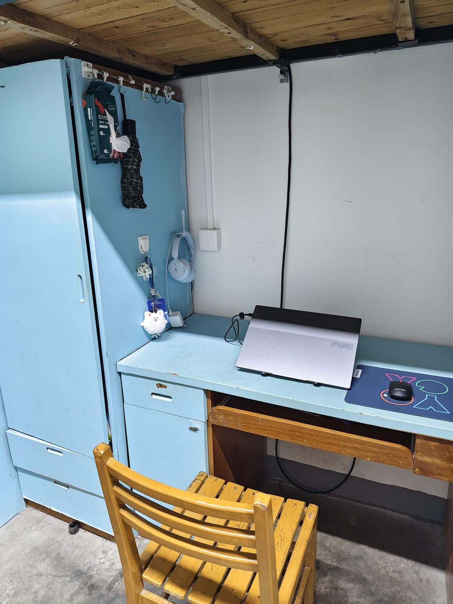
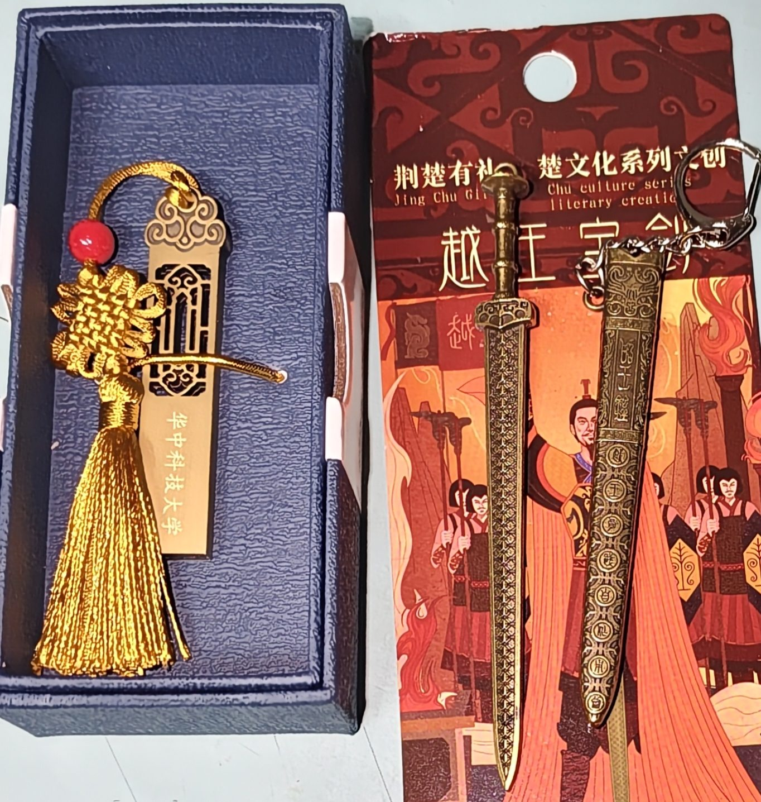

关于我
不是什么了不起的人，就是想把普通日子过出自己节奏的那种人。
先自我介绍一下
我是钟欣雨，武汉人。性格慢热，刚认识的时候话不多， 混熟了能从食堂哪个窗口好吃一路聊到宇宙尽头。 朋友常说我"钝感跳脱"——对很多事反应慢半拍， 好处是很少内耗，坏处是经常走神，被叫三声才回神。
温和、佛系，但该我负责的事会一直做到最后。 作息算是规律的那种人，寝室轮到谁打扫，我会认真扫完再走。 想象力比较放飞，半夜会在备忘录里写一些很离谱的东西 （具体有多离谱，小世界那一页有证据）。
关于我的几个小事实
都是小事，但拼起来就是我。
性格 · 慢热
安静是保护色，熟了话很多
刚开学的时候安静得像不在场，现在室友说我一天能讲完一周的话。
特质 · 钝感
反应慢半拍，所以不太会内耗
别人一句话能琢磨三天，我通常是"啊？哦。"然后继续吃饭，反而活得轻松。
态度 · 佛系
天塌下来先吃饭
口头禅是「问题不大」。但这不是不管事，是先把情绪放一放，再动手解决。
责任 · 内务
寝室卫生，我承包一半
轮到我值日就从里到外扫一遍。住在一起嘛，总得有人愿意多弯一次腰。
内心 · 细腻
别人随口说的话，我会记很久
看着大大咧咧，其实一句歌词、一个眼神都能让我安静一会儿。
我的小天地
一张桌子、一个柜子，就是我在武汉的半个家。


我的一天是怎么过的？
去我的日常
上课、自习、吃饭、回寝室，都收在"我的日常"。